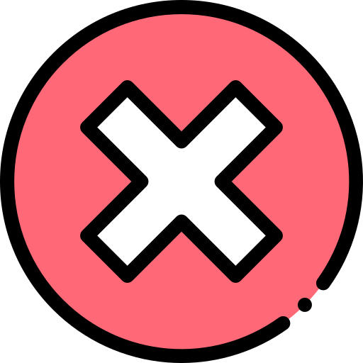

<ion-header>
  <ion-navbar color="primary">
    <button ion-button icon-only menuToggle>
      <ion-icon name="menu"></ion-icon>
    </button>
    <ion-buttons end>
      <button (click)="salir()" ion-button icon-end>
        Salir
      </button>
    </ion-buttons>

    <ion-title>
      Cuentas activas
    </ion-title>

  </ion-navbar>
</ion-header>

<ion-content class="fondo" >
    <ion-refresher (ionRefresh)="actualizando($event)" >
        <ion-refresher-content></ion-refresher-content>
      </ion-refresher>
  <ion-grid [ngClass]="{'normal':!deslizar,'cabeceramenu':deslizar}">
    <ion-row [ngClass]="{'apareceropciones':deslizar,'desapareceropciones':!deslizar}" style="height: 100%;">
        <ion-col col-4 style="margin-top: auto;
        margin-bottom: auto;">
            <div [ngClass]="{'menuseleccionado':seleccionarOpcionBool == 1}" (click)="seleccionarOpcion(1)" (dblclick)="preticketImprimir()" style="  width: 60px;
            height: 60px;    margin-left: auto;
            margin-right: auto;    border-radius: 12px;" >
              
              <h5 style="color: #10376f;"> </h5>
            </div>
          </ion-col>
          <ion-col col-4 style="margin-top: auto;
          margin-bottom: auto;">
              <div [ngClass]="{'menuseleccionado':seleccionarOpcionBool == 2}" (click)="seleccionarOpcion(2)"  (dblclick)="cancelar()" style="    text-align: center;
              width: 60px;
              height: 60px;margin-left: auto;
              margin-right: auto;    border-radius: 12px;" >
                
                <h5 style="color: #10376f;"> </h5>
              </div>
            </ion-col>
            <ion-col col-4 style="margin-top: auto;
            margin-bottom: auto;">
                <div [ngClass]="{'menuseleccionado':seleccionarOpcionBool == 3}" (click)="seleccionarOpcion(3)"  (dblclick)="configuraciones()" style="    text-align: center;
                width: 60px;
                height: 60px;margin-left: auto;
                margin-right: auto;    border-radius: 12px;" >
                  
                  <h5 style="color: #10376f;"> </h5>
                </div>
              </ion-col>
    </ion-row>
    <ion-row style="height: 100%;">
        <ion-col ><label style=" color: #ffe5e5;
          font-size: larger;
          /* font-family: -webkit-body; */
          /* font-stretch: unset; */
          font-weight: lighter;
          font: icon;
          font-weight: bold;
          position: absolute;
    bottom: 20px;">{{tittulo}}</label></ion-col>
    </ion-row>
  </ion-grid>
  <h3 style="text-align: center;
  margin-top: -25px;
  background: #f3f3f3;
  border-top-left-radius: 60px;
  border-top-right-radius: 60px;
  background: white;
height: 30px;"  *ngIf = "capitan == false || capitan == undefined"></h3>
  <h3 style="text-align: center;
  margin-top: -25px;
  background: #f3f3f3;
  border-top-left-radius: 60px;
  border-top-right-radius: 60px;
  background: white;
  box-shadow: 0px 0px,1px,1px;
  box-shadow: 0px -10px 2px 1px #d6384b;height: 30px;" *ngIf = "capitan == true"></h3>
  <ion-grid >
    <ion-row>
      <ion-col *ngFor="let item of arreglo;let indice = index" col-4 col-sm-3 col-md-2 col-lg-2 col-xl-2>
        <div class="divs" [ngClass]="{'ocupado':item.colorear,'preticket':item.preticket,'marcando':item.clase}" (click)="marcar(indice,item)"  >
          
          
          
          <h5>{{item.nombre}}</h5>
              {{item.nombre_mesero}} {{item.hora}}
        </div>
      </ion-col>
    </ion-row>
  </ion-grid>
</ion-content>

<ion-footer [className]="menutogle ? 'menuemergente':'desaparecermenu'">
  <ion-toolbar>
    <button (click)="verTodasMesas();" ion-button icon-only color="success">
      <ion-icon name="restaurant"></ion-icon>
    </button>
    <button (click)="agregar();" ion-button icon-only color="nuevo">
      <ion-icon name="add"></ion-icon>
    </button>
    <button (click)="llevar();" ion-button icon-only color="light">
        <ion-icon name="walk"></ion-icon>
      </button>
      <button (click)="renombrar(indice)" ion-button icon-only color="light">
        <ion-icon name="build"></ion-icon>
      </button>
      <button (click)="sincronizar();" *ngIf="isSemi" ion-button icon-only color="red">
        <ion-icon name="sync"></ion-icon>
      </button>
      <button *ngIf="boolCobrar == true && capitan==true" (click)="autorizar();" ion-button icon-only color="amarillo">
          <ion-icon name="key"></ion-icon>
        </button>
    
  </ion-toolbar>
</ion-footer>